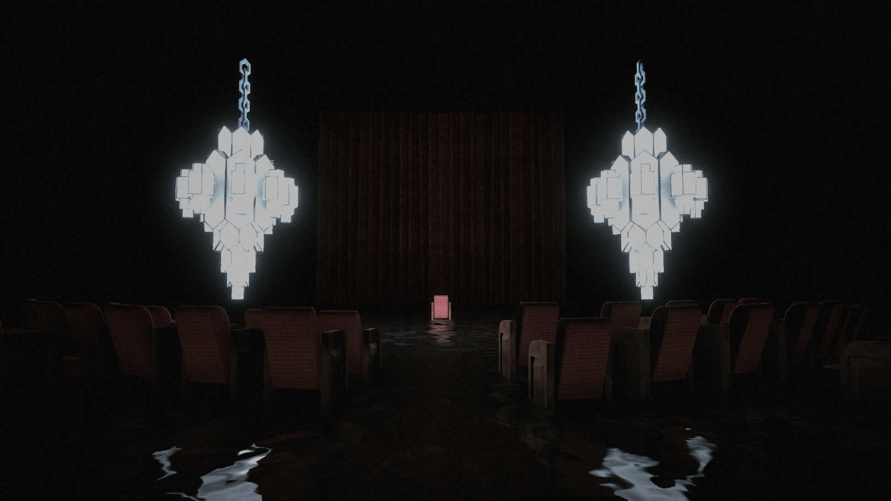
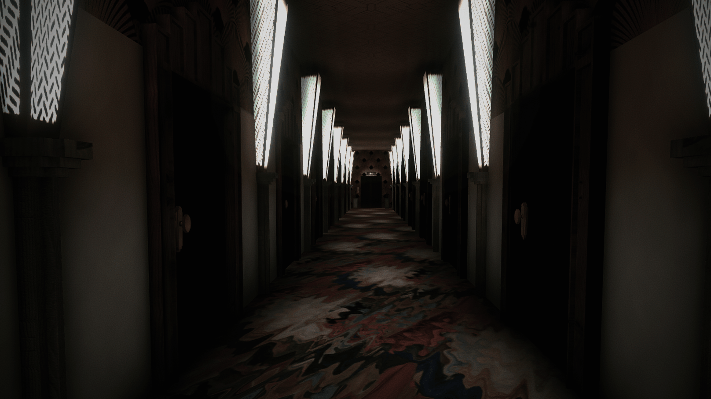
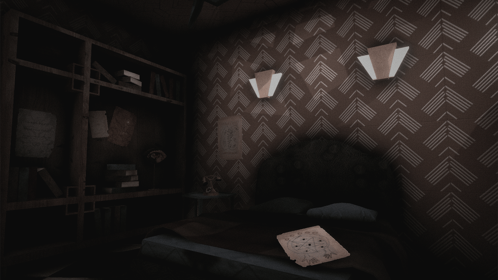
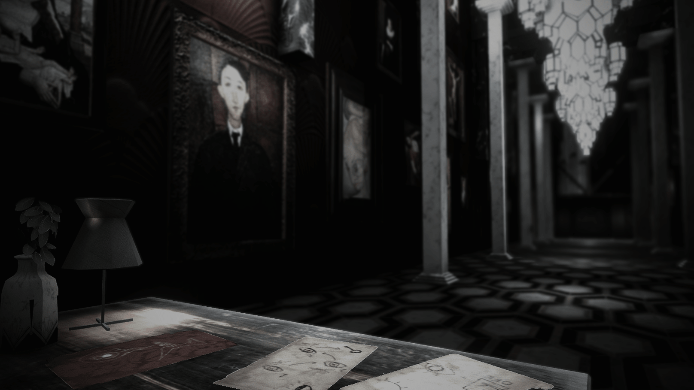

Cabaret
3D first-person psychological horror interactive novel
2019
View Game

About
Cabaret is the first interactive story game I created using Unity engine. Inspired by the style of art deco, the story depicts a series of supernatural encounters in a mysterious hotel.
Cabaret has received a lot of positive feedback on the indie game community itch.io, reached top 2 in the top games chart and gained 1500 downloads in 8 days.
This is an individual project.
Development
Tools
Game development – Unity 3D
3D modelling - Autodesk Maya
Texture design - Adobe Photoshop
Video Asset design - Adobe After Effects
Music and sound editing - Logic Pro X
Cabaret Cabaret Cabaret Cabaret Cabaret Cabaret Cabaret Cabaret Cabaret Cabaret Cabaret Cabaret Cabaret Cabaret


